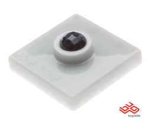

Baby Monitor BUGapp Tutorial
Overview
Unlike most tutorials on the Bug wiki, this tutorial will cover an application with multiple modules and functions, and will cover many aspects of BUG application development in Java. The final application will be a functional baby monitor. I chose this app because it's something I need right now. :)
Intended Audience
This tutorial is written for folks that are looking to get their hands dirty with BUG app development. You will need to be comfortable (but not a genius) with the Java programming language and have some experience with development in general. We'll go easy and introduce things like OSGi and RESTful web services along the way. Don't be afraid! Worst case scenario is that you glaze over and forget this ever happened. Read on!
Pre-requisites
This tutorial assumes you already have a BUG, and have the latest version of the BUG SDK (also called Dragonfly) installed on your computer. Additionally you've followed this guide and have everything working properly.
BUG Modules
The modules used in this tutorial are not required. Yes, you'll have a hard time monitoring a real baby without them, but the Virtual BUG can be used, and even virtual modules can be added to a real BUG in place of having the actual hardware. In any case, these are the modules that will be used somewhere in this tutorial:
 |
The Basics: Take a Picture, Expose it as a Web Service
Let's start out with our baby monitor by simply taking a picture with the camera, and exposing that photo as a web service. This will let us connect to the BUG from other devices with a Browser to see what's going on. The complete source code for the version of our app covered in this section is available here on BUGnet.
Create the Project
We'll start by launching the BUG app project creation wizard from the toolbar as seen below. If your running copy of Eclipse looks different, be sure that you are in the Dragonfly Perspective. The windowing will look different based on your operating system and other desktop settings.
On the first page of the wizard give your new app a name and of course give yourself credit for the (future) masterpiece!
At this point you can click Finish. We won't bother with the rest of the wizard, as we want to write all of the code ourselves!
Side Step: A Brief Tour of a BUG project
Before getting our hands dirty writing our application, let's take a look at the project that was generated. We can learn a lot about how a BUG project is put together, how it compiles, and how it gets built by looking at the project structure. This section can be skipped if you're feverishly excited to write code.
The Eclipse project that was generated contains some classpath containers that hold compiled Java code that can be referenced by your application.
PhoneME Advanced Classpath Container ##UPDATE OR REMOVE##
The BUG of course contains a JVM that runs all our BUG apps. The JVM that ships by default on the BUG is PhoneME Advanced Personal Profile. This is a rather long name but essentially is just a solid, fast, open-source JVM from Sun. While it doesn't support all the features of OpenJDK or other more modern JVMs you may be familiar with, it happens to be a good compromise for smaller computers like BUG. Opening up this classpath container will allow you to see all the core Java classes that are available for you to use in your application. If you look carefully you'll find some things like String.split() which is one of my favorites.
Concierge Classpath Container
Concierge, an OSGi framework, is the runtime environment that hosts BUG apps. This is a topic all unto itself, and we will talk much more about Concierge coming up. For now all we need to know is there are some more classes and interfaces that our applications can use from this classpath container.
BUG Libraries Classpath Container
This one is my favorite! These classes and interfaces are provided by Bug Labs, and make doing things like taking pictures, writing to the base LCD, and providing simple web services very easy. There are many jars in here, but if you spend a few minutes looking through them you may find a pattern. Essentially there are 2 jars (called bundles in OSGi-speak) for each BUG hardware module, and other bundles for things like web services and communicating with the SDK. We'll get more into these classes later as well.
OSGi Bundle Classpath Container
This is a dynamic classpath container. Without getting into it too deeply, OSGi allows bundles, which can be thought of as components, to share classes among each other. This class sharing is defined in the manifest file for each bundle. The OSGi Bundle Classpath Container will dynamically find classes your application needs from other bundles in your workspace.
Java Sources
If you're not familiar with Eclipse, the first child element of your project, in this case entitled bugbabymonitor, is a package. We'll write some Java classes that will be contained within this package. The BUG app creation wizard generated one class for us, Activator.java, which implements the OSGi interface BundleActivator.
META-INF: Where the Manifest File is
This file is read by Concierge, the OSGi framework. The manifest file controls how code can get into and out of a running bundle. Additionally the manifest file contains some basic metadata, such as the app name and author. We'll dig into this file more later on.
Finding BUG Services
A way we can begin writing our application is to consider what hardware devices do I want to use? In our case, of course we need the camera to take a photo of the baby. So, that's the first thing we need. By checking the javadoc or browsing the BUG libraries classpath container, we happen across the com.buglabs.bug.module.camera 1 bundle. This looks promising, and in fact inside that bundle we see a service called ICameraDevice. This is the ticket!
Armed with the knowledge of the service (which may be referred to as an OSGi service as well) we are able to now tell our application we want to get access to it with a ServiceTracker
The OSGi Service Registry
When running on the BUG, our application will be hosted by Concierge, the OSGi framework implementation. In the simplest case, Java programs are loaded by the JVM on the command-line like this:
$ java -jar myjar.jar
This starts the JVM and executes your program. On the BUG, a single JVM instance is executed when the OS starts. This instance runs the Concierge runtime. Within Concierge, OSGi bundles, or BUGapps, are loaded and run. In summary, when a BUGapp runs on a BUG, it is not an isolated program running inside a JVM. Instead, it shares a JVM with other apps and services. As a side track, this page describes a publisher and consumer application that utilize the OSGi service registry: Create_an_application_that_publishes_an_OSGi_service.
One function of Concierge is to keep track of OSGi services. As previously mentioned, ICameraDevice is an OSGi service. What does this mean? Well two things primarily:
- An OSGi service is always a Java interface. A service is abstract. OSGi bundles may provide implementations of services.
- An OSGi service represents an implementation provided by some other bundle, or component in the running JVM instance.
In our case, ICameraDevice is a service defined by the com.buglabs.bug.module.camera bundle. An implementation is made available when we run our app on a BUG or when we run a Virtual BUG.
The OSGi Service Registery is a global list of all OSGi services available. The list contains all of the interfaces (OSGi services) available and a dictionary for each service describing any properties that may be associated with it. There may be 0 or many instances of a given OSGi service in a specific runtime environment. A client application, wanting to get access to a service provided by another bundle, has several ways of doing this. We'll focus on the ServiceTracker, a standard approach to accessing OSGi services.
Binding to ICameraDevice service with a ServiceTracker
Now let's go to the Activator.java class that the SDK generated for us. Assuming you didn't change anything, your code should look like this:
package bugbabymonitor; import org.osgi.framework.BundleActivator; import org.osgi.framework.BundleContext; public class Activator implements BundleActivator { public void start(BundleContext context) throws Exception { // TODO Auto-generated method stub } public void stop(BundleContext context) throws Exception { // TODO Auto-generated method stub } }
Since our app is an OSGi bundle, the Activator serves as the entry and exit point for our application. Essentially, Concierge will call Activator.start() when our app starts up, and Activator.stop() when our app shuts down. Since our application does not run like a standard Java program, a static main() method will have no effect.
Now, let's create a ServiceTracker and start it. Refer to the ServiceTracker and ServiceTrackerCustomizer javadoc for background information on how to use this class. Here is Activator.java after adding our ServiceTracker:
package bugbabymonitor; import org.osgi.framework.BundleActivator; import org.osgi.framework.BundleContext; import org.osgi.framework.ServiceReference; import org.osgi.util.tracker.ServiceTracker; import org.osgi.util.tracker.ServiceTrackerCustomizer; import com.buglabs.bug.module.camera.pub.ICameraDevice; public class Activator implements BundleActivator { private ServiceTracker st; private BundleContext context; public void start(BundleContext context) throws Exception { this.context = context; st = new ServiceTracker(context, ICameraDevice.class.getName(), new BabyTrackerCustomizer()); st.open(); } public void stop(BundleContext context) throws Exception { st.close(); } private class BabyTrackerCustomizer implements ServiceTrackerCustomizer { private ICameraDevice camera; public Object addingService(ServiceReference reference) { camera = (ICameraDevice) context.getService(reference); return camera; } public void modifiedService(ServiceReference reference, Object service) { } public void removedService(ServiceReference reference, Object service) { } } }
Let's break this down and be clear about what the code is doing. The following illustrates the ServiceTracker lifecycle. When our BUG app bundle is started by Concierge, the Activator.start() method is called. Here we create and open a ServiceTracker, and pass it in the constructor a new instance of a ServiceTrackerCustomizer.

Now let's take a look at the BabyTrackerCustomizer class we created. For now I wrote it as a private inner class of Activator, but there is no reason it can't be in it's own file. The addingService() method of this class is called by the ServiceTracker when our service (as passed in the constructor) ICameraDevice is available. Also, should the ICameraDevice service go away, say for example if the Camera module is unplugged from the BUG, then the removedService() method will be called. Using these two methods, we can write our app and get access to the camera in a reliable, safe way.
Periodically Taking a Picture
Complements of the ServiceTracker, we now can write some code that works with the camera and be assured it will only run if a camera is available. To start simple, let's create a thread and just take a picture every 30 seconds. This won't be streaming video, but will provide a details snapshot of what the little baby (I hope she isn't crying...) is up to. First let's move BabyTrackerCustomizer into its own file, then add our code as so:
package bugbabymonitor; import java.io.FileOutputStream; import java.io.IOException; import org.osgi.framework.BundleContext; import org.osgi.framework.ServiceReference; import org.osgi.util.tracker.ServiceTrackerCustomizer; import com.buglabs.bug.module.camera.pub.ICameraDevice; public class BabyTrackerCustomizer extends Thread implements ServiceTrackerCustomizer { private final BundleContext context; private ICameraDevice camera; BabyTrackerCustomizer(BundleContext context) { this.context = context; } public void run() { try { while (!Thread.interrupted()) { byte [] image = camera.getImage(); writeToFile(image, "/tmp/camera.jpg"); sleep(30000); } } catch (InterruptedException e) { } catch (IOException e) { e.printStackTrace(); } } private void writeToFile(byte[] image, String filename) throws IOException { FileOutputStream fos = new FileOutputStream(filename); fos.write(image); fos.close(); } public Object addingService(ServiceReference reference) { camera = (ICameraDevice) context.getService(reference); this.start(); return camera; } public void modifiedService(ServiceReference reference, Object service) { } public void removedService(ServiceReference reference, Object service) { this.interrupt(); } }
As you can see here we're subclassing from Thread. When we get a reference to a ICameraDevice service, we start our thread. In the run() method we loop taking a picture and saving it to a file. This happens until some error occurs, or our camera goes away.
But wait! There is a shutdown issue. What if Concierge calls stop() on our Activator while the thread is running? Well the thread will keep running. Let's update the Activator such that the thread gets interrupted of the stop() method is called.
Side Step: Debugging in Eclipse
Let's run our application in the Virtual BUG and see how things go. If you're not familiar with Eclipse, it has a great interactive debugger. This lets you step through your program as it runs, as well as allowing variables to be checked and even code to be modified in the running program. First, set a breakpoint on the first line of the Activator.start() method. You can set breakpoint(s) on any lind of code where you suspect interesting things might happen.
This can be done by double-clicking in the left-most part of the Java editor in Eclipse (in the gray vertical bar sometimes called the "gutter"). A blue dot will appear to indicate that a breakpoint has been set. Once the breakpoint has been set, launch the Virtual BUG via the toolbar icon. You should see Eclipse change into a configuration like this:
Uh, it's not working and I have an error in the console
Well yes! This is quite common, in fact I just did it! You may recall earlier, OSGi uses a manifest file to track code imports and exports. We covered this manifest file briefly in a previous section. If you run your app and get an error like this in the console, read on!
Essentially what Concierge is saying with this error is that our BUGapp (OSGi Bundle) is trying to load a class it doesn't have access to, in this case com.buglabs.bug.module.camera.pub.ICameraDevice. How can this be!? Eclipse finds the class just fine! Well this is one of those cases where the design time is not the same as the run time. The manifest file controls the run time environment. Behind the scenes in the SDK, we ignore this and happily let any class access any other publicly available class that can be found. But this carefree attitude changes drastically once we try to run our code.
In order to fix this problem we have to tell Concierge that we want to import the package namespace for the ICameraDevice service. The namespace is everything before the name. We add this in the manifest with the Import-Package header. Here is the updated manifest.mf file:
Manifest-Version: 1.0 Bundle-Name: BugBabyMonitor Bundle-Activator: bugbabymonitor.Activator Bundle-SymbolicName: BugBabyMonitor Bundle-Version: 1.0.0 Bundle-Vendor: kgilmer Bug-Bundle-Type: Application Import-Package: com.buglabs.bug.module.camera.pub
Well what about all the other classes, like FileOutputstream? Well, glad you asked. OSGi, as per the spec, automatically imports the common Java and OSGi classes for each bundle, so it doesn't have to be explicitly imported for each bundle.
Showing the Picture via a Web Service
Well as of yet things are not really too exciting. Yes we have a picture, but it's trapped in the tmp directory! How can we get up-to-the-second details on our little baby? We need some way of getting that image to a remote device. Well, assuming your BUG is connected to a network 2, this can be achieved in a variety of ways. We'll take the easy way out and use the built-in web service framework to expose the image to any web clients. So, if you happen to have an iPhone or PC connected to your local network getting the latest image should be easy! Let's start by writing an implementation of com.buglabs.services.ws.PublicWSProvider2 in our application. I'll call it ImageWebService.java:
package bugbabymonitor; import java.io.File; import java.io.FileInputStream; import java.io.FileNotFoundException; import java.util.List; import com.buglabs.services.ws.IWSResponse; import com.buglabs.services.ws.PublicWSDefinition; import com.buglabs.services.ws.PublicWSProvider2; public class ImageWebService implements PublicWSProvider2 { private String name = "baby"; public void setPublicName(String name) { this.name = name; } public PublicWSDefinition discover(int operation) { if (operation == PublicWSProvider2.GET) { return new PublicWSDefinition() { public List getParameters() { return null; } public String getReturnType() { return "image/jpg"; } }; } return null; } public IWSResponse execute(int operation, String input) { if (operation == PublicWSProvider2.GET) { return new ImageResponse(); } return null; } public String getDescription() { return "What is that baby up to?"; } public String getPublicName() { return name; } private class ImageResponse implements IWSResponse { public Object getContent() { try { return new FileInputStream("/tmp/camera.jpg"); } catch (FileNotFoundException e) { e.printStackTrace(); } return null; } public int getErrorCode() { return 0; } public String getErrorMessage() { return "/tmp/camera.jpg does not exist"; } public String getMimeType() { return "image/jpg"; } public boolean isError() { File f = new File("/tmp/camera.jpg"); if (f.exists() && f.isFile()) { return false; } return true; } } }
This looks like a lot of code but is actually pretty simple. The PublicWSProvider2 interface implementation defines the name of the web service, provides a discovery mechanism via public PublicWSDefinition discover(int operation), and then let's you pass your data to the client in the public IWSResponse execute(int operation, String input) method. Here we are simply creating an InputStream on the file object and telling the client what type it is. But we also check to see if the file we are trying to pass actually exists, and if not we throw an HTTP error.
Registering the Web Service
Before our web service becomes live on the BUG we must register it with the com.buglabs.services.ws.PublicWSAdmin service. This is an OSGi service that runs in the background and serves up web services from a variety of servers. However, we cannot guarantee that this service is available. In OSGi, because services are dynamic, we cannot count on them always being there. What do we do? Well we could wing it and just get a reference to it and fail if we can't find it. We would probably want to add the code in our Activator.start() method so we can register our service when we first startup. The code for that would look like:
public void start(BundleContext context) throws Exception { // ... ServiceReference sr = context.getServiceReference(PublicWSAdmin.class.getName()); PublicWSAdmin admin = (PublicWSAdmin) context.getService(sr); }
But, if we look back at our activator we're already tracking the ICameraDevice service. If we add the PublicWSAdmin along for the ride, then we can say to the OSGi runtime, "I only want to run if the camera and WS admin are available". And indeed this makes sense, if either of these services are not available there is no point in running, right? So let's do that. Here is our new Activator that is tracking both ICameraDevice and PublicWSAdmin:
package bugbabymonitor; import org.osgi.framework.BundleActivator; import org.osgi.framework.BundleContext; import org.osgi.framework.Filter; import org.osgi.util.tracker.ServiceTracker; import com.buglabs.bug.module.camera.pub.ICameraDevice; import com.buglabs.services.ws.PublicWSAdmin; import com.buglabs.util.ServiceFilterGenerator; public class Activator implements BundleActivator { private ServiceTracker st; BundleContext context; private BabyTrackerCustomizer babyTracker; private String [] services = { ICameraDevice.class.getName(), PublicWSAdmin.class.getName() }; public void start(BundleContext context) throws Exception { babyTracker = new BabyTrackerCustomizer(context); Filter f = ServiceFilterGenerator.generateServiceFilter(context, services); st = new ServiceTracker(context, f, babyTracker); st.open(); } public void stop(BundleContext context) throws Exception { st.close(); if (babyTracker.isAlive()) { babyTracker.interrupt(); } } }
Notice here in the start method I'm creating a Filter. There is some handy code that takes an array of service names and generates the filter. You can do it manually if you like, check out the JavaDoc for the Filter class for more details.
And now in our BabyTrackerCustomizer class, we need to handle the case where we get the PublicWSAdmin service and then register our web service there. Here is that update:
package bugbabymonitor; import java.io.FileOutputStream; import java.io.IOException; import org.osgi.framework.BundleContext; import org.osgi.framework.ServiceReference; import org.osgi.util.tracker.ServiceTrackerCustomizer; import com.buglabs.bug.module.camera.pub.ICameraDevice; import com.buglabs.services.ws.PublicWSAdmin; public class BabyTrackerCustomizer extends Thread implements ServiceTrackerCustomizer { private final BundleContext context; private ICameraDevice camera; private PublicWSAdmin wsAdmin; private ImageWebService ws; BabyTrackerCustomizer(BundleContext context) { this.context = context; } public void run() { try { while (!Thread.interrupted()) { byte [] image = camera.getImage(); writeToFile(image, "/tmp/camera.jpg"); sleep(30000); } } catch (InterruptedException e) { } catch (IOException e) { e.printStackTrace(); } } private void writeToFile(byte[] image, String filename) throws IOException { FileOutputStream fos = new FileOutputStream(filename); fos.write(image); fos.close(); } public Object addingService(ServiceReference reference) { Object o = context.getService(reference); if (o instanceof ICameraDevice) { camera = (ICameraDevice) o; } else { wsAdmin = (PublicWSAdmin) o; ws = new ImageWebService(); wsAdmin.registerService(ws); } if (camera != null && wsAdmin != null) { this.start(); } return o; } public void modifiedService(ServiceReference reference, Object service) { } public void removedService(ServiceReference reference, Object service) { wsAdmin.unregisterService(ws); this.interrupt(); } }
Last and certainly most forgotton, we need to update the manifest file with references to the PublicWSAdmin package and the buglabs util package, as we used the helper method to generate our Filter instance in Activator.java:
Manifest-Version: 1.0 Bundle-Name: BugBabyMonitor Bundle-Activator: bugbabymonitor.Activator Bundle-SymbolicName: BugBabyMonitor Bundle-Version: 1.0.0 Bundle-Vendor: kgilmer Bug-Bundle-Type: Application Import-Package: com.buglabs.bug.module.camera.pub, com.buglabs.util, com.buglabs.services.ws, org.osgi.util.tracker
Take it for a spin
Now let's run the code on the BUG (or Virtual BUG if you prefer). I'm gonna run it in the Virtual BUG, so the URL for my BUG is going to be http://localhost:8082. My real BUG is at http://10.10.10.10/ Let's go to the Virtual BUG now:
Well this is nice but I don't see a baby. Let's click on the BUG Web Services link, that looks promising:
Ah, now we see the service! This page is rendered from the discovery information that was provided in PublicWSProvider2.discover() method. Also, if you are looking in the SDK you might also find some evidence of your new service:
Well, let's go to the actual service and see what happens. As you can tell from the XML, our service happily supports HTTP GET so we can just go there in the browser:
And there you have it, a web-service enabled baby monitor!
Conclusion
Well, that is all it takes for a simple BUG app that uses hardware and web services! There is a whole lot more to BUG development and we'll get into some of that next, but this is really the core of it. Moving along, we'll add more modules and richer functionality to our baby monitor app and learn more about the BUG platform along the way!
Triggering the Photo with Motion
Well it's all good and fine to be able to see what the little creature is up to via a HTTP GET request, but it's kind of silly just to loop every 30 seconds and take a picture. It would be better to simply take a photo when motion is detected. Well, we do happen have this motion sensing module. Let's put it to use! The complete source code for the version of our app covered in this section is available here on BUGnet.
Finding the Motion Service
Let's go back to the BUG Libraries classpath container in our Eclipse project. Since we're looking for some service relating to the detection of motion, it makes sense that that service would be defined in the motion module's bundle. And sure enough we uncover something called IMotionSubject which looks like an API that can be used to register ourselves as listeners to:
Augmenting our ServiceTracker
Now that we know what server we need, let's update our ServiceTracker so it will look for the motion sensing service in addition to the camera service and the WS service:
package bugbabymonitor; import org.osgi.framework.BundleActivator; import org.osgi.framework.BundleContext; import org.osgi.framework.Filter; import org.osgi.util.tracker.ServiceTracker; import com.buglabs.bug.module.camera.pub.ICameraDevice; import com.buglabs.bug.module.motion.pub.IMotionSubject; import com.buglabs.services.ws.PublicWSAdmin; import com.buglabs.util.ServiceFilterGenerator; public class Activator implements BundleActivator { private ServiceTracker st; BundleContext context; private BabyTrackerCustomizer babyTracker; private String [] services = { ICameraDevice.class.getName(), PublicWSAdmin.class.getName(), IMotionSubject.class.getName() }; public void start(BundleContext context) throws Exception { babyTracker = new BabyTrackerCustomizer(context); Filter f = ServiceFilterGenerator.generateServiceFilter(context, services); st = new ServiceTracker(context, f, babyTracker); st.open(); } public void stop(BundleContext context) throws Exception { st.close(); babyTracker.removedService(null, null); } }
Listening for Motion
And now in our BabyTrackerCustomizer class we want to move from a polling strategy to an event-based strategy. To do this we remove the Thread code, as we no longer need it. Then, when we are notified by the ServiceTracker that the motion service is available, we register ourselves as a listener. Then, when we get called, we take a picture and save it to the filesystem. You'll find that this code is slightly simpler than when having to deal with a thread. BabyTrackerCustomizer.java:
package bugbabymonitor; import java.io.FileOutputStream; import java.io.IOException; import org.osgi.framework.BundleContext; import org.osgi.framework.ServiceReference; import org.osgi.util.tracker.ServiceTrackerCustomizer; import com.buglabs.bug.module.camera.pub.ICameraDevice; import com.buglabs.bug.module.motion.pub.IMotionObserver; import com.buglabs.bug.module.motion.pub.IMotionSubject; import com.buglabs.services.ws.PublicWSAdmin; public class BabyTrackerCustomizer implements ServiceTrackerCustomizer, IMotionObserver { private final BundleContext context; private ICameraDevice camera; private PublicWSAdmin wsAdmin; private ImageWebService ws; private IMotionSubject motionService; BabyTrackerCustomizer(BundleContext context) { this.context = context; } private void writeToFile(byte[] image, String filename) throws IOException { FileOutputStream fos = new FileOutputStream(filename); fos.write(image); fos.close(); } public Object addingService(ServiceReference reference) { Object o = context.getService(reference); if (o instanceof ICameraDevice) { camera = (ICameraDevice) o; } if (o instanceof PublicWSAdmin) { wsAdmin = (PublicWSAdmin) o; ws = new ImageWebService(); wsAdmin.registerService(ws); } if (o instanceof IMotionSubject) { motionService = (IMotionSubject) o; motionService.register(this); } return o; } public void modifiedService(ServiceReference reference, Object service) { } public void removedService(ServiceReference reference, Object service) { wsAdmin.unregisterService(ws); motionService.unregister(this); } public void motionDetected() { if (camera != null) { byte [] image = camera.getImage(); try { writeToFile(image, "/tmp/camera.jpg"); } catch (IOException e) { // TODO Auto-generated catch block e.printStackTrace(); } } } }
Adding the Motion service namespace to the OSGi Manifest
Before we can run our application, we need to tell Concierge (the OSGi framework) that we want to import classes from the Motion bundle. Here is our new manifest:
Manifest-Version: 1.0 Bundle-Name: BugBabyMonitor Bundle-Activator: bugbabymonitor.Activator Bundle-SymbolicName: BugBabyMonitor Bundle-Version: 1.0.0 Bundle-Vendor: kgilmer Bug-Bundle-Type: Application Import-Package: com.buglabs.bug.module.camera.pub, com.buglabs.util, com.buglabs.services.ws, org.osgi.util.tracker, com.buglabs.bug.module.motion.pub
Take it for a spin
Now that our app is ready to go, let's install it on the BUG (or Virtual BUG). You'll be seeing some photos on the web page, but now they should only update when motion is detected! Be sure you have the real or virtual motion module attached to your BUG!
Respond to Sound
This section isn't ready yet!
Email Me
This section isn't ready yet!
Launch with an Icon
This section isn't ready yet!
Advanced Remote Access
This section isn't ready yet!
Resources
The source code for BUG Baby Monitor can be found here on BUGnet, the place to go for all sorts of BUG applications.
Footnotes
1 The actual bundle we see in the SDK is com.buglabs.bug.emulator.module.camera. This is because in the SDK we are not running the native Java code, but the APIs are exactly the same.
2 The BUG can be connected to a network in a variety of ways. The yet unreleased Wifi/BT module is a good one. Also USBNET is a simple way, if you have another PC within USB cable range. Also, Linux-compatible Wifi USB dongles will work with the BUG via the von Hippel USB port.